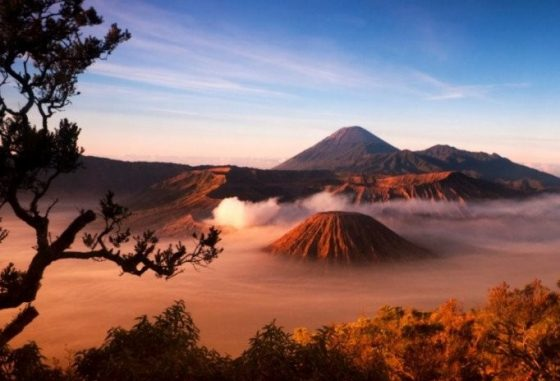

#suatu deklarasi yang digunakan untuk mengidentifikasikan jenis dokumen html yang digunakan sehingga browser dapaat menetukan bagaimana memperlakukan kode tersebut.
##setiap pembuatan dokumen HTML diawali dan diakhiri dengan tag HTML.
#Elemen head kepala dari dokumen html.
Modul Praktikum 1 Daerah #elemen title merupakan judul dari dokumen html yang ditampilkan pada judul jendela browser. Tag ini terletak diantara tah dan tag
DEWI IMANI AL QUR' ANI
Hi, nama Saya Dewi salah satu mahasiswa semester 2.
Jurusan Teknik Informatika Fakultas Teknik Universitas Trunojoyo Madura.
PROBOLINGGO KOTA ANGGUR MANGGA

Mari Kenali Daerah Sekitarku Yok !

Probolinggo merupakan salah satu kota yang ada di Provinsi Jawa Timur.
Kota ini sangat terkenal dengan sebutan kota anggur mangga dan gunung Bromonya.
Probolinggo memiliki ciri khas tersendiri baik dari segi bahasa yang digunakan oleh masyarakat nya maupun segi destinasi wisata yang ada di Probolinggo.
Mungkin tidak asing lagi dengan yang namanya destinasi wisata yang satu ini yaitu gunung Bromo yang terletak di Kecamatan Sukapura, destinasi wisata ini sudah terkenal hingga manca negara.
Jadi tidak diragukan lagi jika Probolinggo terkenal dengan gunung Bromonya.
Bukan sekedar gunung Bromo, wisata lainnya seperti air terjun Madakaripura, Seruni Point, Negeri Diatas Awan, BJBR, Stasiun Lama, TWSL, Ranu Segaran, dan masih banyak lagi.
Probolinggo memanglah banyak wisata alamnya yang masih terlindungi keasriannya hingga saat ini, jadi bagi kalian yang mengaku pecinta alam namun belum pernah ke Probolinggo rasanya belum lengkap kalok belum merasakan keindahan alam yang ada di Probolinggo.
 Selain destinasi wisata dan budaya yang begitu menggugah selera di Probolinggo sinilah tempat saya dibesarkan tepatnya di Desa Bulujaran Lor Kecamatan Tegalsiwalan, dilihat dari nama desanya ada kata "Jaran" yang pasti banyak kudanya ya, tapi jangan heran meskipun nama desa Bulujaran Lor namun sekarang masyarakat nya hanya sedikit yang memiliki kuda, hmhmhm sedih yaa sedih banget.
Seperti menghilangkan kesan dari desa ini sendiri, tapi jangan heran di Desa Bulujaran Lor ini sendiri memiliki icon tersendiri, yaitu patung kuda yang terletak ditengah tengah desa antara Bulujaran Lor dan Bulujaran Kidul.
Selain destinasi wisata dan budaya yang begitu menggugah selera di Probolinggo sinilah tempat saya dibesarkan tepatnya di Desa Bulujaran Lor Kecamatan Tegalsiwalan, dilihat dari nama desanya ada kata "Jaran" yang pasti banyak kudanya ya, tapi jangan heran meskipun nama desa Bulujaran Lor namun sekarang masyarakat nya hanya sedikit yang memiliki kuda, hmhmhm sedih yaa sedih banget.
Seperti menghilangkan kesan dari desa ini sendiri, tapi jangan heran di Desa Bulujaran Lor ini sendiri memiliki icon tersendiri, yaitu patung kuda yang terletak ditengah tengah desa antara Bulujaran Lor dan Bulujaran Kidul.
 Memanglah Desa Bulujaran Lor ini terkenal dengan desa yang sangat rawan entah rawan kecelakaan, begal atau apapun itu dikarenakan jalan yang banyak tikungan dan jalan raya yang sepi.
Tapi jangan khawatir masyarakat desa ini sangat ramah banget jadi jangan khawatir jika baru menginjakkan kaki di desa ini.
Memanglah Desa Bulujaran Lor ini terkenal dengan desa yang sangat rawan entah rawan kecelakaan, begal atau apapun itu dikarenakan jalan yang banyak tikungan dan jalan raya yang sepi.
Tapi jangan khawatir masyarakat desa ini sangat ramah banget jadi jangan khawatir jika baru menginjakkan kaki di desa ini.
Ya begitulah kawasan tempat tinggal saya penuh akan suka dan duka tapi ya bahagia hidup disini karena ada pepatah lebih baik hujan batu dinegeri sendiri daripada hujan emas di negeri orang.
Menurut saya memang benar pepatah tersebut sejauh apapun kita melangkah kita tidak akan bisa lupa dimana kita dibesarkan dan menghabiskan masa kecil.